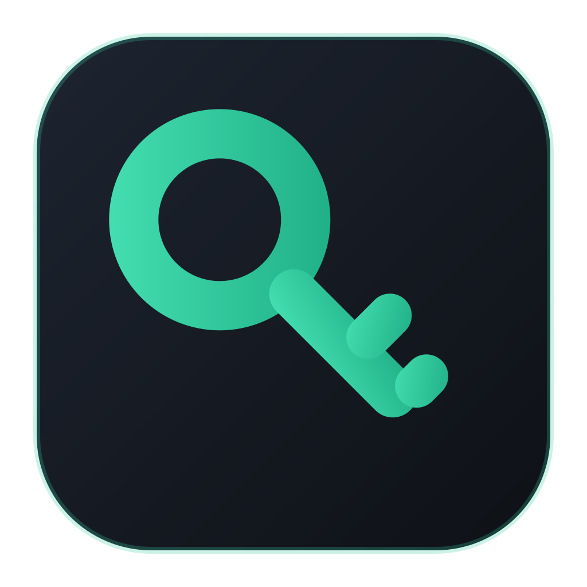

A fast, keyboard-first password manager for KeePass .kdbx files. Beautiful on the desktop, at home on your phone.
Free & open source · View on GitHub
Works directly on standard kdbx 3 & 4 files with Argon2 — fully compatible with KeePassXC, KeePassium, and the rest of the ecosystem. No import, no lock-in.
Fuzzy search everything, create entries in place, copy credentials, and jump between vaults without touching the mouse. Press ? for the full cheat sheet.
Connect once and open vaults straight from Dropbox on every device. Saves upload automatically, with conflict copies protecting simultaneous edits.
Unlock with your fingerprint on macOS. The master password lives in your system keychain, gated by biometrics with a device-password fallback.
The clipboard clears itself 30 seconds after copying, notes stay blurred until revealed, and a backup is written beside your vault on every save.
Groups, entries, custom fields, file attachments, edit history, and trash — the full KeePass model, in a clean three-pane layout.